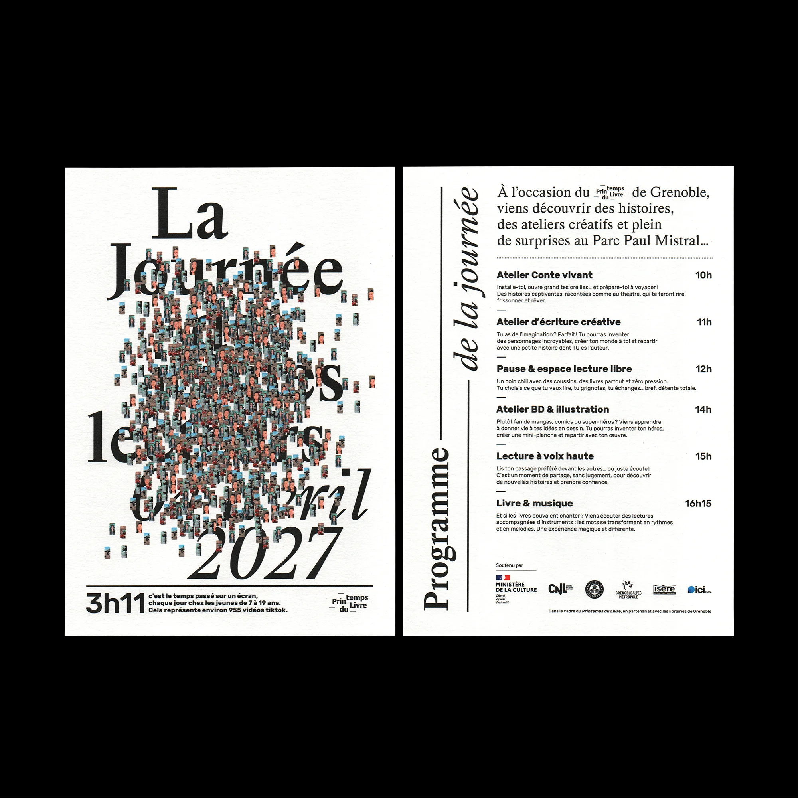
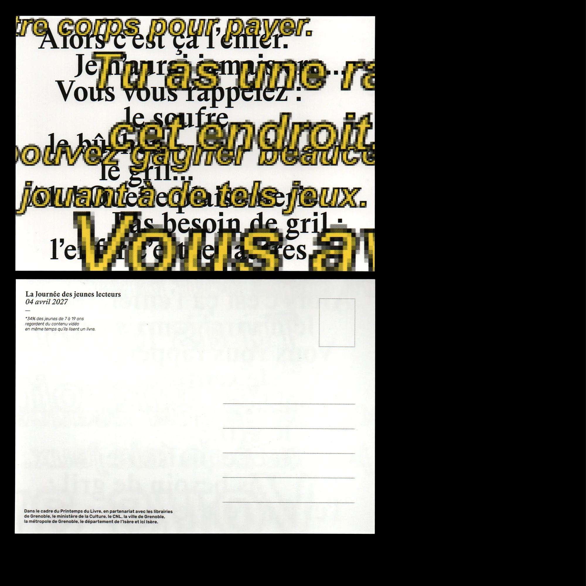
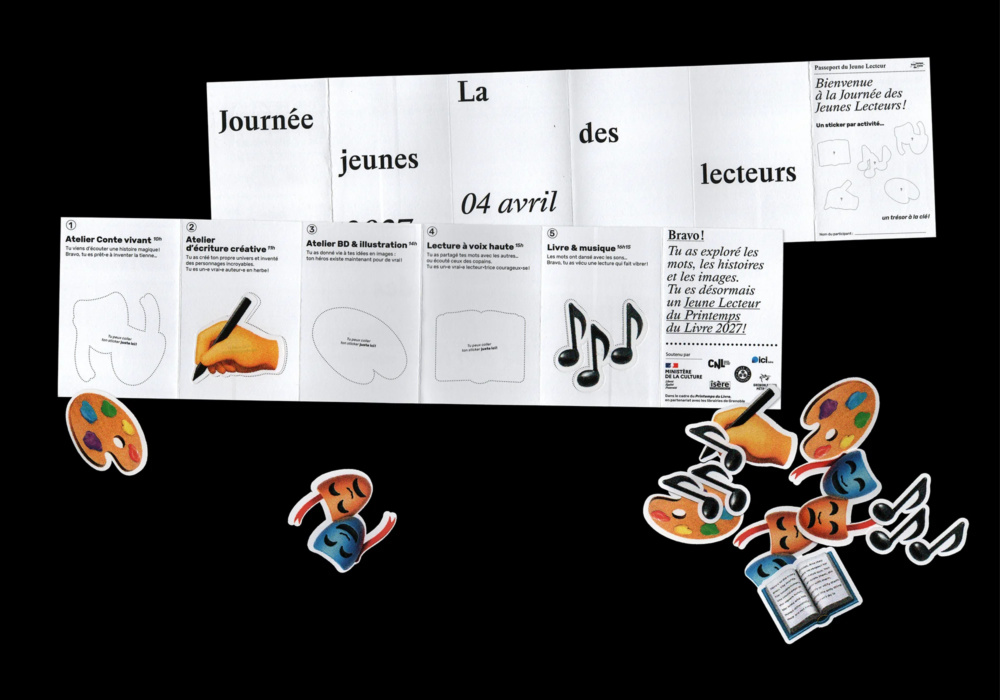
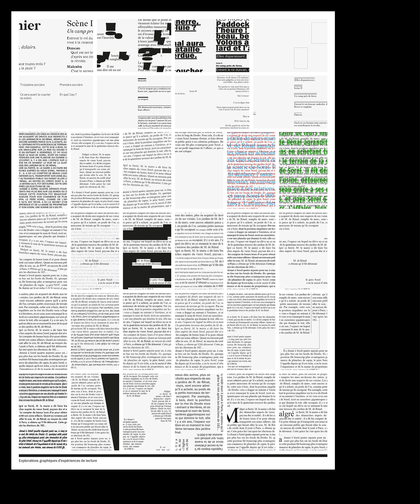
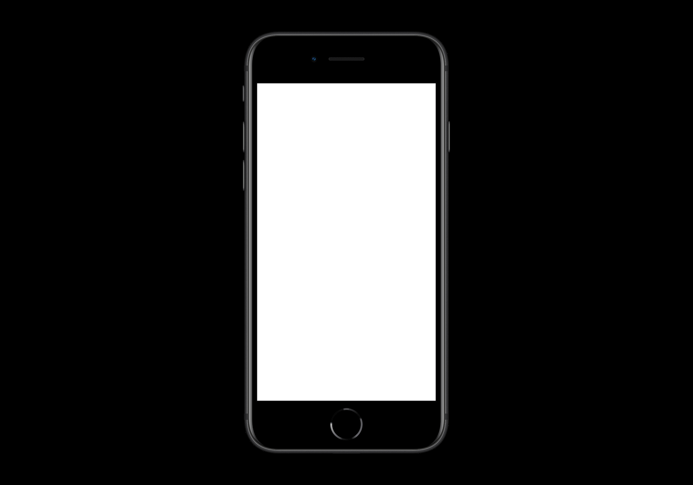
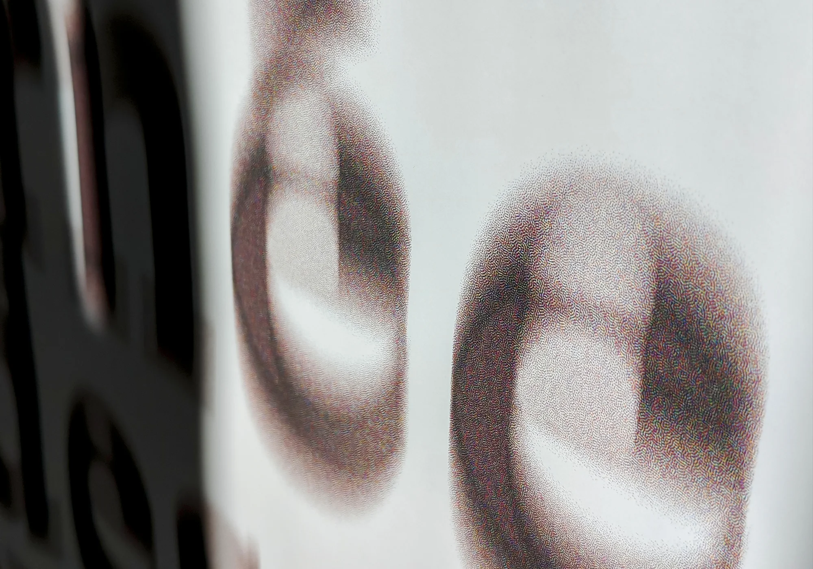
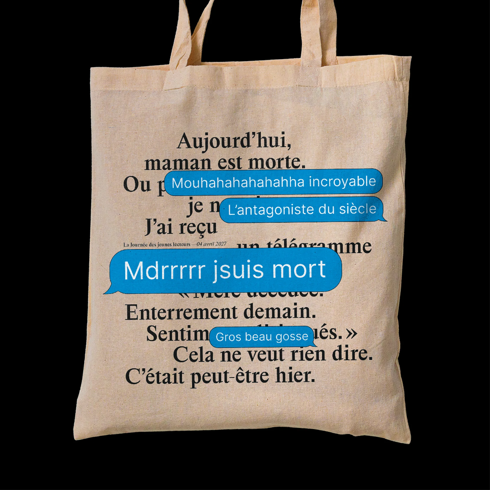
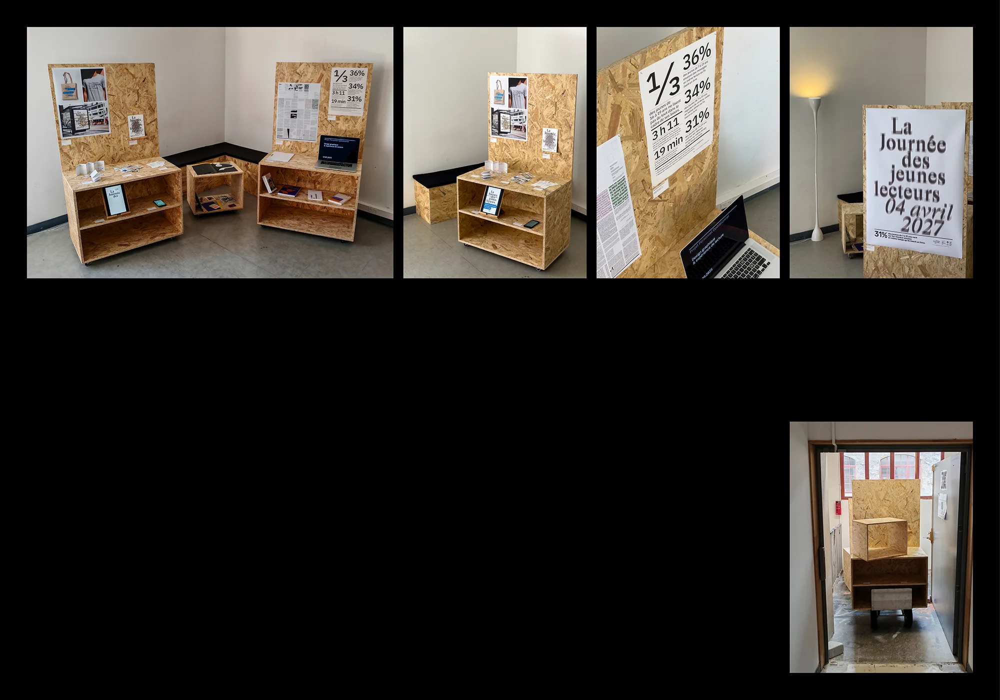

La Journée des jeunes lecteurs
Édition, 2025
Projet d’école
Projet de diplôme autour du rapport à la lecture chez les jeunes lecteurs. Comment (re)donner le goût de la lecture aux jeunes dans un contexte où les pratiques culturelles se tournent de plus en plus vers les écrans et le numérique ? Le Printemps du Livre de Grenoble propose une journée dédiée à la lecture pour sensibiliser et motiver les jeunes à lire en leur proposant une expérience collective, interactive et agréable autour de la lecture.